|
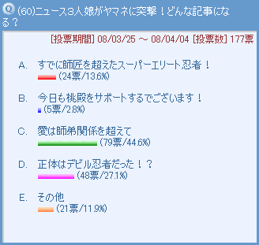 どこからかともなくスーパーエリートくのいちの噂を聞きつけたニュース３人娘。根掘り葉掘りヤマネからいろんなことを聞き出すわけですが、記事の内容として１位に選ばれたのはやっぱりヤシチへの恋心でしたね。３人娘によって内容は勝手にアレンジされてしまいそうな予感がします。そんないじられやすいヤマネなので、その他にはいろんなコメントが寄せられていますね。暴走事故やパピィと手を組んだり…ととにかくネタに事欠かないヤマネちゃん♪［コメント一覧］
|
ヤマネ＆ワカバ(1)
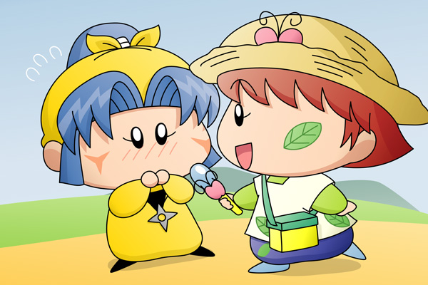
ワカバ「じゃ〜〜んっ。妖精新聞のワカバで〜す！
今日はスーパーくのいち忍者のヤマネちゃんに取材にやってきました〜〜」
ヤマネ「私にでございますか？
それに私はスーパーくのいち忍者とかそのような者では・・・」
ワカバ「いいのいいの、恥ずかしがらなくても。
ヤマネちゃんはいつも思っていることを答えてくれればいいの」
ヤマネ「はい、ちょっと緊張するでございます」
（１０分ほどヤマネの忍者修行などの質問：地味な光景なので省略^^;）
ワカバ「じゃあ次の質問に行くね。
ヤマネちゃんは今恋をしているんですか？」
ヤマネ「こ、恋でございますかっ・・・。
あ、あの・・・その・・・」
ワカバ「わぁ、好きな人がいるのね」
ヤマネ「い、いえ、決してそのようなことは・・・」
ワカバ「ヤマネちゃんの好きな男の子ってどんな人？
同じ妖精忍者なの？もしかして尊敬する先輩とか？」
ヤマネ「や、ヤシチ兄様と私は決してそのような関係では・・・」
ワカバ「（これは図星だったみたいね）
へえ〜っ、ヤマネちゃんはヤシチくんのことが好きなんですね」
ヤマネは慌てて口を押さえた後「はい」と答えました。その後３０分ほどヤシチとの恋の話題になり、何かがふっきれたヤマネは思っていることをすべて答えました。翌日出来上がった妖精新聞とそれを見たヤシチの反応は・・・皆様のご想像にお任せします。(2008/8/13)
|
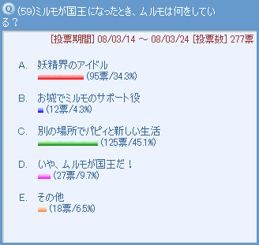 将来ミルモは国王になりますが、第二王子のムルモはいったいどうしているかと言うと…。１位に選ばれたのは、お城から離れてパピィと一緒に暮らすというパピィも喜びそうな生活となりました。なんだかんだで兄のことを慕っているムルモだから、里のことはすべて兄に任せて自分は口を挟まない方がいいと考えるのかもしれませんね。２位に選ばれたのがお城関連ではない点であることにも、皆さんのそういう思いを感じます。いや、わがままなムルモだから、面倒なことは兄に任せて自分のやりたいことに専念するのかも！？［コメント一覧］
|
ムルモ＆パピィ(17)
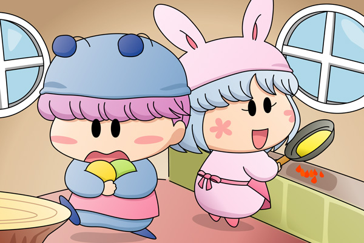
１位に選ばれた、二人の同棲生活(!)を描いてみました。ミルモが国王になる頃はムルモたちももう少し大きくなっていそうですが、私の想像力ではうまく表現できないので今の体型のままで…。
二人の性格を考えると一緒に生活するとケンカばかりしそうですが、そこは大人になった二人。今よりもうちょっと賢くなって、お互い素直になることが愛情を深めることにつながることに気がついているはず・・・と想像してみました。
パピィ「ムルモは果物を切ってちょうだい」
ムルモ「あいでしゅ・・・おっとっと」
パピィ「こっちが終わったら果物を切るの手伝うね」
何というデレデレ生活！ リルムがこの生活を見たらきっとうらやましがってミルモにも同じことをさせようとしそうです。が、恥ずかしがり屋の兄は「めんどくせ〜」とか言って聞き耳を立てないのでしょうね。(2008/7/26)
|
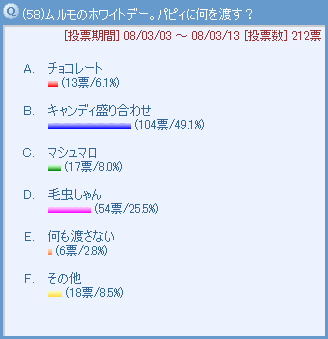 バレンタインデーではパピィから手渡しでチョコをもらったムルモ、紳士なムルモがお返しをしないはずはありません。果たしてどんなプレゼントを用意するか？ １位はもちろんパピィのことを想ってのキャンディ盛り合わせでしたね。キャンディ一粒一粒にパピィへのいろんな思いが含まれていそうな気がします。さて２位は…ギャグで用意した毛虫しゃんが選ばれるとは！ ムルモに悪気はないにせよ、パピィに渡していたら大げんかになるところでした。［コメント一覧］
|
ムルモ＆パピィ(15)
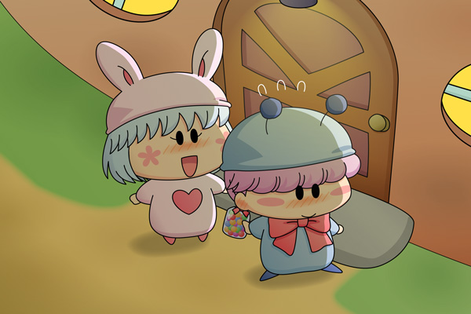
パピィ「ムルモ、お家まで送ってくれてありがとう！」
ムルモ「ボ、ボクは当然のことをしたまででしゅよ・・・」
恥ずかしそうにムルモがパピィに背中を向けると、今度は何かを差し出しました。
ムルモ「・・・パピィ、これ・・・」
パピィ「えっ、これ・・あたちにくれるの？
うれちい！！」
ムルモ「この間のチョコのお返しでしゅ」
ムルモが振り返ると、キャンディ盛り合わせの瓶を抱えて本当にうれしそうにしているパピィの笑顔がムルモの瞳に飛び込んできました。つられてムルモの顔もさらに真っ赤になります。
「パピィ、早くしなさい。ご飯ができてるわよ」
パピィの家の扉が開き、中からパピィのお母さんが顔を出しました。
「あら、ムルモくん遊びに来てたんだ」
ムルモ「こんばんはでしゅ。
・・・ボクもう帰らなきゃでしゅ」
「もう暗いから、今日は家に泊まっていきなさいな」
パピィ「そうよ、歓迎ちてあげる」
ムルモ「ほえぇぇぇっ」
パピィはムルモの手を取って、家の中へとムルモをぐいぐい引っ張っていきました。
何だか投票のお題とは直接関係のない絵＆ストーリーになってしまいました(^^;。アニメや原作ではパピィの両親が登場することはなかったけれど、きっとパピィと同じように物事を勝手に決めていきそうなタイプのような気がします。パピィの家に泊まることになったムルモ、この後のストーリーは皆様にていろいろ考えてみてくださいませ〜。(2008/6/21)
|
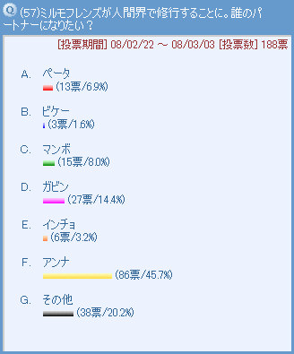 妖精学校のクラスメートに絞って、パートナーとして人間界に来て欲しい妖精をうかがってみました。１位のアンナはパートナーのために一生懸命勉強して役に立とうとがんばりそうですね。アンナはヤマネのように多少世間知らずのところもあるから、たまに暴走することもありそうです。その他の意見では、皆さん思い思いに好きな妖精を挙げられていたのが面白かったです。でもクモモが間違えるから、願った妖精と別の妖精がやって来そう…。［コメント一覧］
|
ミルモ＆リルム＆アンナ(1)
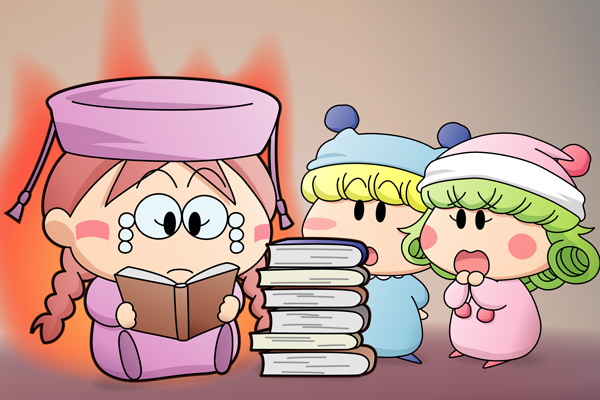
ミルモ「いつまで勉強してんだよ、アンナ」
リルム「そうですわ、パートナーの方がいつも一人で淋しそうに
していらっしゃいますわ」
アンナ「二人とも邪魔しないで！
人間界について知らないことが多すぎるのは問題だわ」
ミルモ「そんなもん勉強しなくてもすぐに覚えられるってのに」
修行のために人間界へやってきたアンナですが、パートナーそっちのけで勉強ばかりしているアンナを描いてみました。とにかく個性的な妖精ばかりなので、アンナの場合もガリ勉な性格が強調されそうです。
さてアンナはどんな人間のパートナーになるか？ 私としては、アンナとは正反対な、毎日全然勉強しない男の子のパートナーがアンナのパートナーになって、アンナがそのパートナーに勉強することの大切さを教えたり、また本からでは得られないこともたくさんあることを逆にパートナーから教わったりするようなシーンがあるといいなと思っています。(2008/5/31)
|
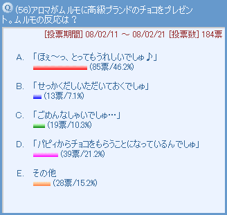 バレンタインデー第２弾として、今度はアロマとムルモに焦点を当ててみました。お嬢様なアロマはムルモとパピィの恋の関係にはやや鈍感…そんなわけで今年もムルモにチョコのプレゼントを持ってきます。それに対するムルモの反応は、やっぱり笑顔で受け取っちゃう、ですよね。皆さんのコメントもどれもムルモらしさが表れています。中でも「アロマしゃんのチョコは特別でしゅ☆」は、これはアロマ以外の女の子にも言いそう(笑)。［コメント一覧］
|
ムルモ＆アロマ(3)
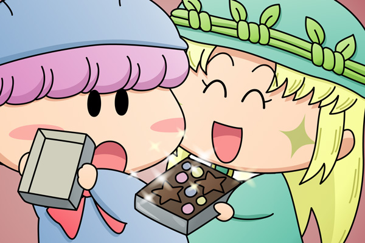
アロマ「ムルモ様！」
アロマは「はいっ」とムルモに小さな箱を差し出しました。
アロマ「ムルモ様のためにチョコレートを選んでみたの」
ムルモ「ほえ〜〜っ、これはなかなか手に入らないと言われる
『星屑チョコ』じゃないでしゅか！
ボクは初めて見たでしゅ！早速いただいてもいいんでしゅか？」
アロマ「はい、もちろん」
ムルモが箱を開けると、きらきらしたチョコの輝きに目がくらみました。
ムルモ「さっそくいただくでしゅ。
もぐもぐ・・・口の中でとろけてほっぺが落ちそうでしゅ〜」
アロマ「よかった！ムルモ様に喜んでいただけて・・・」
ムルモ「せっかくだし、アロマしゃんも一緒にどうでしゅか？」
アロマ「え、私はその・・・」
ムルモ「いいからいいから、お口をあ〜んして欲しいでしゅ」
アロマ「・・・あ〜〜ん」
相手がパピィだと恥ずかしがってしまうムルモも、相手がアロマだとこんな風に積極的になったりして…と思い思い描いてみました（いろいろ意見がありそうですけど）。こんな光景をパピィに見られたら大騒動となりそうですが、今年は運良く見られなかったということにしておきます。
こうしてブランドものの美味しいチョコを味わったムルモでしたが、後でちゃんとパピィのチョコを食べてくれるはず。見た目・味ともにアロマのチョコに劣るパピィの手作りチョコを、ムルモがどんな風に食べるのかを皆さんで想像してみてくださいね。それにしてもアロマは本命の幼馴染みの彼にプレゼントを渡せたのかどーか？(2008/5/17)
|
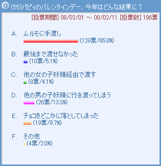 2008年のバレンタインデーはパピィとムルモに注目してみました。チョコがどのように行き渡るか、いろいろ選択肢を用意してみましたが、やはり手渡しがダントツのトップでしたね。正面から渡して、ついでに告白…というパピィにとっては夢のような光景がまたみんなの願いでもありました。また２人の関係は一筋縄ではいかないから、２位と３位の展開も十分にあり得そうですね。最終的にはムルモの手元にチョコは行き渡って欲しいですけど。［コメント一覧］
|
ムルモ＆パピィ(14)
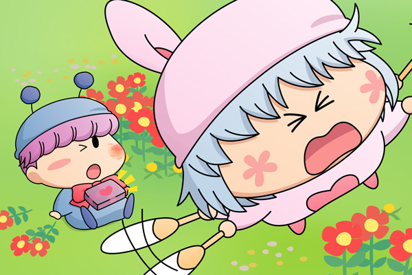
今年こそはムルモにチョコを手渡そう・・・意気込んでムルモのそばまでやってきたパピィでしたが、最後の勇気を出すことができません。「どうちたらいいの？」と焦って頭が真っ白になったパピィは、何を思いついたのかムルモに跳び蹴りを食らわし、ムルモが目を回しているうちにチョコを渡して逃げるようにその場を立ち去るのでした。
ムルモ「・・・パピィのやつ・・・。
ん？これは何でしゅ？」
何とかパピィの手渡し作戦成功！・・・ってみんなが望んでいないお約束的展開でごめんなさいm(_ _)m。来年はちゃんと正面から渡せるようなシーンを描くようがんばります！(2008/5/11)
|
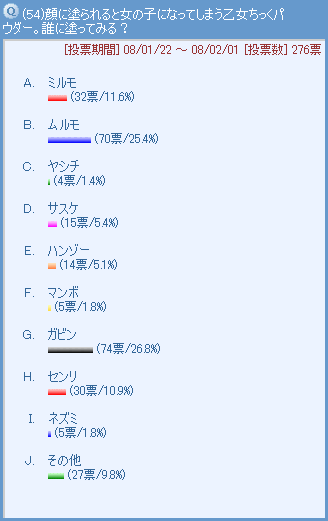 原作６巻８４ページに登場した乙女ちっくパウダー。塗られた男は女になってしまい、二度と男には戻れないという恐ろしいアイテム…（きっと元に戻すアイテムは別にあるんだろうけど）。不幸にもそのターゲットに選ばれたのはガビン、２位のムルモといい、かわいい系の妖精が選ばれたような感じです。逆に選ばれなかった妖精はというと…。［コメント一覧］
|
マンボ＆ガビン(2)
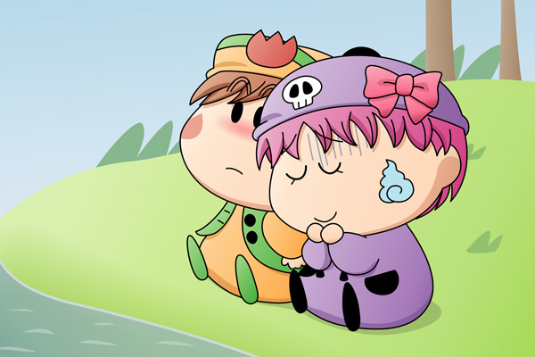
乙女ちっくパウダーをかけられたガビンを描いてみました。本当は乙女ちっくパウダーをかけられると髪が長くなったり、服がひらひらになったりするのですが、ガビンの丸っこいかわいらしさが失われそうな気がするので今回は帽子のリボンだけで…。ガビンは元から女の子っぽいからあまり違和感がなかったりします。
絵の方は、女の子になってますます弱気になったガビン、そしてそんなガビンに頼られて「ガビンが女の子なら…」とまんざらでもないマンボになります。この二人はアニメでも仲が良かったから乙女ちっくパウダーによりそういう関係になったりして・・・（このストーリーはあくまでフィクションです^^;）。だけど、ミルモフレンズは女の子が少ないからガビンが女の子だったら良かったのになぁと思うことが多いです。(2008/5/4)
|
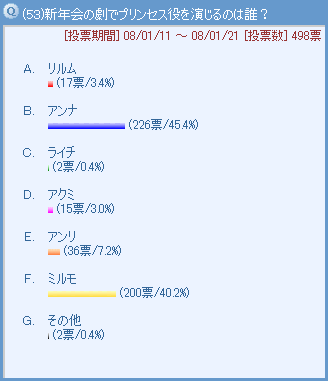 妖精界では妖精たちの間で新年会が行われ、ミルモたちは劇を披露することになりました。主役となるプリンセス役にはいろんな女の子妖精が推薦されましたが、ダントツでトップに選ばれたのはアンナ！ビケーがマンボやペータたちとも協力して票を集めていそうです。当の本人は「私には出来るわけがないわ」と言いそうですが…。どんな劇になったのかは皆さんのご想像にお任せします(^^)。アンナとのデッドヒートの末、２位に敗れたミルモでしたが、多くの妖精が「ミルモ子にならなくて良かった…」とホッとしているのかもしれませんね。［コメント一覧］
|
|
アンナ(1)
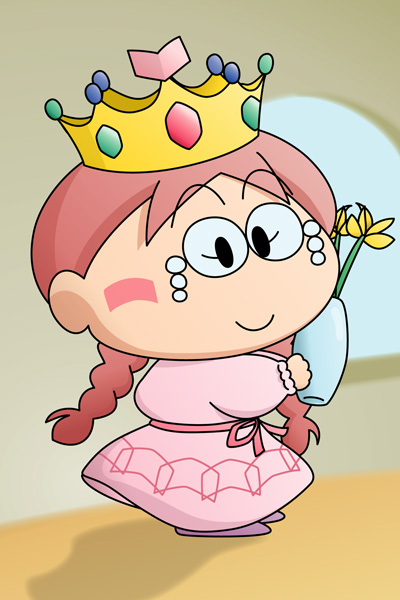
本の国のプリンセス役を演じるアンナを描いてみました。アンナは帽子のデザインより勉強家のイメージが強くて、その帽子があるとプリンセスっぽく見えなかったので王冠に変更…。最初はいやいや演じるアンナでしたが、練習するうちにプリンセス役が板について、おしとやかな性格になってきた…というイメージを無理矢理ふくらませながら・・・今回のお題はなかなか難しかったです。皆さんだったらどんなプリンセスアンナを想像するのか興味深いです。(2008/4/21)
|
|
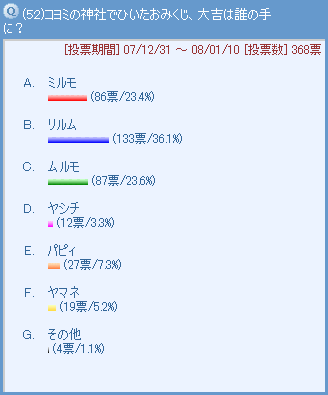 2008年最初の投票は、お正月らしくおみくじネタにしてみました。コヨミの神社におみくじを引きに行った妖精たち、皆さんの投票により最高の運勢はリルムへと渡りました。ミルモと結婚して幸せを掴んだリルムにさらなる幸せが訪れそうですね。人当たりの良い性格が幸せを引き寄せることもありそうです。対照的に票が少なかったのはヤシチとヤマネ…。この２人は苦労人＆薄幸というイメージが強いのでしょうか(笑)。今年もこの二人は失敗を繰り返しながらたくさん努力しそうです。［コメント一覧］
|
ミルモ＆コヨミ(1)
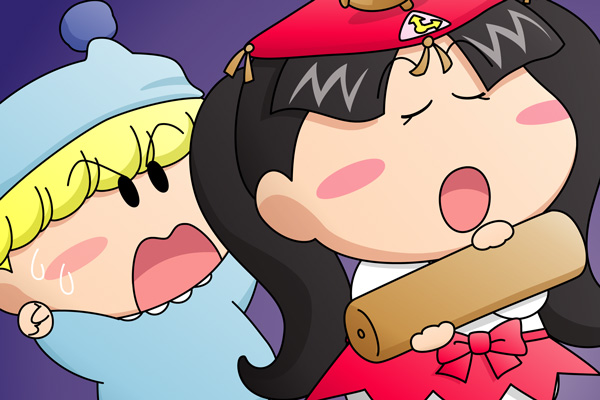
おみくじの結果に喜ぶリルム・・・ではなくて、おみくじの結果に苦情を申し立てるミルモを描いてみました。いや、つんつんした性格のコヨミを描いてみたかったりして。
リルムのおみくじの結果に「みんなを喜ばせる料理ができる」とか「魔法が世界を救うでしょう」とか書かれていて、それを見たミルモはコヨミに「いくら何でも大ハズレだろ！」と文句を言いますが、コヨミは「面白そうだからいいんだも〜ん」と言って全く相手にしてくれなさそうです。帰宅した後は、腕によりをかけたリルムの恐怖の手料理がミルモに差し出されたのは言うまでもありません。ちなみにミルモのおみくじは「大凶」ということにしておきます(笑)。(2008/4/4)
|
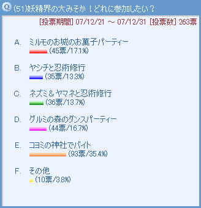 2007年最後の投票のお題です。アニメなどでは年末の妖精界が描かれることはありませんでしたが、いろいろ用意した選択肢でのトップは何と「コヨミの神社でのバイト」。神聖な気持ちで新年を迎える…というよりも、コヨミの人気の高さが感じられる結果でした。２位と３位にはそれぞれパーティーが入りました。妖精界では朝までにぎやかなパーティーが続いていそうですね。［コメント一覧］
|
|
パピィ(3)
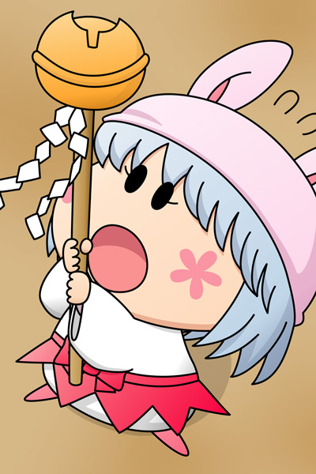
コヨミの神社でバイトするパピィを描いてみました。いえ、正確にはバイト前の採用試験です。コヨミの神社に備わっているこの鈴の付いた棒を振ることが出来れば合格なのですが、棒のあまりの重量にパピィは負けてしまって、この後尻餅をついて倒れてしまいます。除夜の鐘を突きにきたムルモに巫女姿を見せる計画は残念ながら失敗のようです。(2008/3/31)
|
|